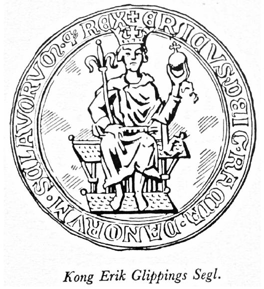
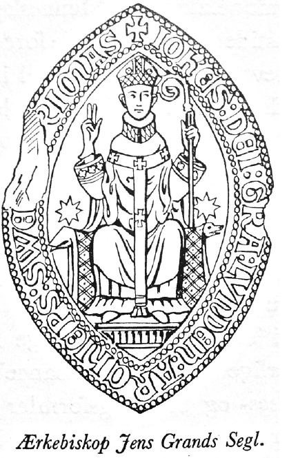

Nedenstående publikation blev udgivet af Det Danske Sprog- og
Litteraturselskab i 1943 som en kort, populær introduktion til Diplomatarium Danicum.
Forfatteren var Franz Blatt (1903-79), der udover at være professor i klassisk filologi
ved Aarhus Universitet også var hovedredaktør for diplomatariet.
Originale sidetal
er angivet [i klammer].

Hvert skimlet Skrift, hver skjoldet Alterbog
har gemt
et Gran af Slægtens Ve og Vaade,
nu skal de røbe mig, hvad Vej jeg drog,
og løfte mig en Flig af Livets Gaade.
Mere end for nogen anden Kilde til Danmarks Riges Historie gælder disse Digterord for vort middelalderlige Brevstof. Fugtighed og Kulde er i Aarhundredernes Løb faret haardt frem mod vore gamle Haandskrifter, hvilket ikke vil forundre den, der kender de Arkiver, som i Tidens Løb har tjent til Opbevaringssted for vore middelalderlige Dokumenter; mange Breve er gaaet tabt for bestandig og kendes kun af Omtale.
Efterhaanden er det lykkedes at samle Størstedelen af det bevarede Brevstof i Rigsarkivet paa Slotsholmen, men endnu findes danske Breve spredt rundt omkring i nordiske og udenlandske Arkiver og Biblioteker: i Stockholm og Lund, Reval og Riga, Dorpat og Greifswald, Königsberg og Stralsund, Lübeck og Rostock, Hamborg og Kiel, Schwerin og Stettin, Kam[6]pen og Wismar, Bremen og Braunschweig, Utrecht og Münster, Berlin og London opbevares den Dag i Dag Breve af Betydning for Udforskningen af vor Historie; nogle faa danske Breve har forvildet sig langt bort fra Østersøens og Nordsøens Kyster til Frankrig (Paris, Troyes) og Italien (Vatikanet).
For at vor Arv af gamle Breve ikke yderligere skal forødes, og for at det bevarede kan fremtræde samlet i en værdig Form til Gavn for historisk Forskning, har vort Slægtled taget sig paa at udgive og i dansk Form tilgængeliggøre Danmarks Riges Breve. Der er nemlig det ved Brevene, at de i højere Grad end Historiefortællernes farvede Beretninger formaar at fastholde den paa et enkelt sikkert dateret Tidspunkt givne Situation med alle dens Nuancer. De har netop hvert for sig bevaret "et Gran af Slægtens Ve og Vaade". Naar man betænker, at det ældste bevarede danske Brev – affattet paa Latin – er fra 1085, og at vi dels har bevaret, dels har Viden om mange tusind Breve angaaende danske Forhold fra Tiden efter 1085, baade Breve, der er udgaaet fra Danmark, og Breve, der er indløbet hertil, er det indlysende, hvor nødvendigt det er for enhver, der vil fordybe sig i vor middelalderlige Historie, at have Adgang til og Muligheder for at læse vor Middelalders latinske Breve [7] og Dokumenter. Historikerne har da ogsaa lige fra Hans Grams og Langebeks til Erslevs og Arups Dage været interesserede i at faa en samlet Udgave af alle Dokumenter eller Breve vedrørende Danmarks Rige i hele den Udstrækning, dette havde i Middelalderen, et saakaldt Diplomatarium Danicum. Et Værk af denne Art er for nærværende under Udgivelse paa det Danske Sprog- og Litteraturselskabs Initiativ; det rummer ikke blot Breve fra det nuværende Danmark, men ogsaa fra Skaane og Slesvig, fra Rügen, der hørte til Roskilde Stift, fra Femern, der hørte til Odense Stift, og fra Estland, der en Tidlang var under dansk Administration. Det rummer Kongebreve og Pavebreve, Bispebreve og Embedsmænds Breve, Institutioners og private Personers Breve, gejstlige og verdslige Breve mellem hinanden. Lignende Brevsamlinger findes i alle europæiske Lande. Men hvad der ikke findes andensteds, er en fuldstændig Oversættelse til Modersmaalet af det latinske Brevstof, en Oversættelse, der ogsaa sætter andre end den latinkyndige Historiker i Stand til paa egen Haand at stifte Bekendtskab med Kilderne. Under Navnet Danmarks Riges Breve udsendes der – med Støtte fra Undervisningsministeriet, Den Raben-Levetzauske Fond og Carlsbergfondet – en Oversættelse af det latinske Brevstof. Ved Siden [8] af denne Rigsudgave har de historiske Amtsforeninger muliggjort, at der kan komme en Udgave for de enkelte Amter, indeholdende kun det lokale Brevstof. Det er betegnende, at et saadant Forsøg paa at gøre selve det historiske Kildestof tilgængeligt for en videre Kreds, er paabegyndt just herhjemme, hvor Lyset ikke blot er for de lærde. Skulde nogen højlærd rynke paa Næsen ad denne Oversættervirksomhed, der er i Pagt med de bedste reformatoriske Bestræbelser, maa det være nok at henvise vedkommende til den klassiske Filolog Wilamowitz" Ord om, at kun ved Oversættelse til Modersmaalet tvinger man sig selv og andre til at forstaa hver Tøddel af en Tekst paa fremmed Sprog. De middelalderlige Breve, der er bevaret i Original, har man endelig udsendt i fotografisk Reproduktion (Corpus Diplomatum Regni Danici), saa baade nulevende Forskere og "de, der skal komme" med egne Øjne kan kontrollere og korrigere Udgivernes Arbejde. Det er nemlig slet ikke altid saa ligetil at vænne sig til de middelalderlige Skriveres Luner: en lille Pennestreg kan betyde meget; Forskellen mellem L og S er ringe, men staar der Lundis under et Brev, er det udstedt i Lund, staar der Sundis, er det skrevet i Stralsund, og det gør en Forskel.
Nu maa man ikke tro, at middelalderlige Breve er [9] private Meddelelser Mand og Mand imellem eller Mand og Kvinde imellem, saaledes som Betegnelsen "Breve" maaske kunde faa en til at antage. Kærestebreve, Lykønskningsbreve og lignende private Skrivelser er Middelalderen som Helhed fremmede. Middelalderens Breve er af en egen Beskaffenhed; de giver sjældent Udtryk for personlige Følelser og faktiske Forhold, men fastslaar næsten altid enten et bestaaende eller et ønsket Retsforhold. Kun undtagelsesvis har de bevarede Breve ikke Karakter af retslige Dokumenter; en saadan Undtagelse er den Skrivelse, hvormed Kong Kristoffer af Bayern indbød Fru Else Holgersdatter af Hevringholm til sit Bryllup. Kristoffer skulde formæles med den brandenborgske Prinsesse Dorothea og sendte i den Anledning følgende Indbydelse til Fru Else:
Kristoffer, af Guds Naade Danmarks, Norges, Sveriges, de Venders og Goters Konge, Greve af Rhinpfalz og Hertug af Bayern. Vor Gunst som tilforn. Vid, at vi med Guds Hjælp vil holde vort Bryllup første Søndag efter den hl. Bartolomæus' Dag her i København. Thi beder vi Eder kærligen om, at I vil rette Eder derefter, saa at I kommer hid til os senest Søndagen før Bartolomæusdag, saa at I sammen med Os kan rejse vor Fæstemø imøde. I skal for vor Skyld iføre Eder kostelige Klæder og Smykker og komme med Eders forspændte Karm og fagre Heste og veludstyrede Svende, for at være glade med os i den Tid og være Gud og Os velkomne …
Brevet er skrevet i København den 12. Maj 1445. [10] For det forste er dette Brev fra Middelalderens Slutning, og dets Udsteder er ikke en hvilkensomhelst Borger i Landet. Naar de fleste af vore middelalderlige Breve er retslige Dokumenter, og naar man normalt ikke skrev for at invitere til Bryllup og Barsel, beror det først og fremmest paa det Faktum, at Skrivefærdighed, naar undtages den gejstlige Stand, ikke var hver Mands Sag – vi har saaledes intet sikkert Vidnesbyrd om, at nogen dansk Konge før de oldenborgske selv har kunnet skrive. Dertil kom, at det Materiale, hvorpaa man skrev, Pergamentet, var saa kostbart, at almindelige Mennesker ikke satte sig i Udgift bare for at meddele et enkelt andet Menneske deres Følelser eller et Par forholdsvis ligegyldige Kendsgerninger. Endelig havde man antagelig heller ikke dengang den fulde Sikkerhed for, at et Brev naaede sit Bestemmelsessted; der kræves et Overskud af baade Tid og Tryghed, for at man skal betro sine mere personlige Anliggender til Papiret eller Pergamentet.
Naar vi derfor taler om Danmarks middelalderlige Breve, forstaar vi derunder det, der med et teknisk Udtryk hedder et Diplom. Et Diplom er oprindelig Benævnelsen paa det Entledigelsesbrev, den romerske Soldat modtog efter tro Tjeneste, og som gav ham [11] romersk Borgerskab med de deraf følgende Retsvirkninger. Et Diplom bestod af to sammenlagte Blytavler, paa hvis Inderside Veteranens Privilegier var skrevet: de to Metalplader var bundet sammen og forseglet med syv Segl. Den Dag i Dag siger vi, "at vor Mund er lukket med syv Segl", naar vi rigtig skal tie stille med noget. Skrivematerialet skiftede, men "Diplom" vedblev at være den gængse Betegnelse for det med Retsvirkning udstyrede Brev, saaledes som det kendes fra alle europæiske Lande i Middelalderen. Ogsaa den Skik at forsegle Brevet bevarede man, men Forseglingen eller Beseglingen tjener efterhaanden ikke saa meget til at lukke Brevet som til at stadfæste, at Brevet virkelig hidrører fra den, der angives som dets Udsteder, at det er "authentisk".
Fra ældgammel Tid og paa vidt forskellige Steder har Menneskene benyttet Segl, d. v. s. Aftryk af Stempler med indgraverede fordybede Figurer til Bekræftelse af et Skriftstykkes Ægthed. Man finder saadanne Aftryk paa de assyriske Lertavler, paa de ægyptiske Papyrus, og allerede i Bibelen omtales Brugen af Degl. Om Kong Farao fortælles det, at han drog en Signetring af sin Finger og satte den paa Josefs Haand som Tegn paa den Myndighed, han fik overdraget, ganske som i Danmarks Middelalder Pavens Udsen[12]ding sætter Lundebispen i Besiddelse af Kongens Gods "med den gyldne Ring", d. v. s. sin Signetring. Det middelalderlige Diplom er som Regel et mere eller mindre kunstfærdigt beskrevet Stykke Pergament, gennem hvis nederste Del der er trukket nogle Snore af Hør eller Silke, og det er paa disse Snore Voksseglet er anbragt. De ældste danske Segl er Kongesegl eller gejstlige Mænds og Institutioners Segl. Paa Kongeseglets Forside ses Kongens Billede med Krone, Rigsæble og Scepter, dets Bagside viser fra 12. Aarhundredes Slutning tre Løver og Hjerter i et Skjold, den Sammenstilling vi kender fra Hovedfeltet i det danske Rigsvaaben. Bispeseglene har altid en anden Form end Kongeseglene: de er ovalt tilspidsede for at efterligne den mandelformede Glorie, hvori Kristusskikkelsen fremstilles i kirkelig Kunst. Danske Bispesegl viser Bispen siddende med højre Haand oprakt til Velsignelse og med Bispestav i venstre Haand modsat Bispeseglene fra Nabostifterne Bremen, Hamborg, Lübeck, o. s. v., hvor man ser Bisperne sidde med Stav i højre og Bog i venstre Haand. Seglstemplet, Signetet, var som Regel af Metal; der har næppe været mange Signeter i hele Kristenheden, der som Roskilde Domkapitels Segl var af Hvalrostand. Brugen af Segl bredte sig i det 13. og 14. Aarh. overalt i Samfundet. Vi faar [13] baade adelige og borgerlige Segl. Det er kun rimeligt, at Medlemmerne af Slægten Kande i deres Segl har afbildet en Kande med Tud og Laag, at Jens Hvalp fører en Hund i sit Segl og Palle Griis skiftevis et halvt og et helt Vildsvin. Det smukkeste Segl har imidlertid altid været det kongelige Dobbeltsegl, den kongelige Magts Symbol. Om dets højtidelige Karakter minder Formlen "under vor kongelige Haand og Segl", der endnu i 1943 ledsager kongelige Anordninger.
Vi staar hermed overfor en af de mange faste Formler, der indgaar som uundgaaelige Led i Middelalderens Breve; disse faste Formler giver Brevene en vis Stivhed, som staar i Modsætning til, hvad man kender fra antikke og moderne Breve. Der findes Eksempler paa, at baade antikke og moderne Mennesker hemningsløst har udleveret sig selv til Samtid og Efterverden – noget tilsvarende vil man lede forgæves efter i Middelalderen. Hvor kan de virke monotone, disse evindelige middelalderlige Hilseformler: "N.N. til alle dem, som ser dette Brev eller hører det læse, Hilsen med Gud evindelig" – men tænker man lidt over dem, har ogsaa de deres Bidrag at give til Belysning af svundne Tiders Vilkaar. Ikke alle formaaede dengang selv at læse Brevets Budskab, mange maa have det læst op ("til dem, som ser dette Brev [14] eller hører det læse"). Ligesom Bogen, saaledes er ogsaa Brevet i Tiden før Bogtrykkerkunstens Opfindelse beregnet for Øret nok saa meget som for Øjet. Et Brev er i Middelalderen ikke skrevet for Samtiden alene, men baade for at nulevende og tilkommende skal være bekendt med dets Indhold. "Nulevende skal vide, og det skal ikke være skjult for dem, som skal komme". Hilseformlen (salutatio) skifter efter Udstederens Stand og Stilling; det er ikke tilfældigt, at Abbed Esbern af Esrom, Jens af Løgum og Mads af Ryd Kloster indleder en Klageskrivelse til Paven ikke blot med Hilsen, men "med Kys paa hans Helligheds Fod" eller at Kongens Vasaller i Estland bevidner Kong Kristoffer I. "tjenstlig og skyldig Lydighed og redebon Vilje i enhver Henseende". Naar fremmede Prælater skal formane den danske Konge, ønsker de ham "Lydighed og en rettere Visdoms Aand". Den, der er fornemst, nævnes først i Hilseformlen, uanset om han er Brevets Udsteder eller Modtager: "Til den ærværdige Fader i Kristus Tyge, af Guds Naade Biskop i Aarhus, Broder Bo Hilsen evindelig med Vorherre".
Ved særlig højtidelige Lejligheder gaar der forud for Hilseformlen en Paakaldelse af Gud: den saakaldte invocatio: "I den hellige og udelelige Treenigheds, Faderens, Sønnens og den Helligaands Navn". Den [15] egentlige Hilseformel falder i to Dele, Udstederens Navn og Titel (intitulatio), f. Eks. "Isarn, Herr Pavens Kapellan og Nuntius, af det apostoliske Sæde beskikket som Dommer" og Modtagerens Navn og Titel (inscriptio), f. Eks. "til den stormægtige Herr Erik, af Guds Naade de Danskes og Venders Konge". Invocatio, intitulatio og inscriptio udgør tilsammen Brevets Indledning (Protokol).
Det næste Led i Brevet er gerne en almindelig Motivering for, at man overhovedet skriver: "omskiftelig er Menneskets Lod, og svindende er alle levende Menneskers Erindring. Thi alt, hvad der handles i Tiden, svinder hen med Tiden, hvis det ikke bekræftes af Vidners Røst eller skriftligt Vidnesbyrd" eller "for at ikke det, der sker i Tiden, i Tidens Løb skal gaa af Minde, har Fortiden viselig bestemt, at det skal foreviges med skriftligt Vidnesbyrd". Det er et Udtryk for sund Mistillid til Omverdenen, naar det hedder "det, der sker med Rette, drages ofte i Tvivl, hvis det ikke kan støtte sig til det skrevne Ord" – alt Formler, der viser, hvor betaget man var, naar man ad Skriftens Vej skulde forevige det levende Ord. Den almindelige Motivering, hvis tekniske Navn er arenga, kan være meget udførlig; dette er navnlig Tilfældet i ældre Tid, jo senere Brevet, desto kortere er som Regel Mo[16]tiveringen. En af de udførligste Motiveringer findes i Erik Lams Gavebrev til Næstved Kloster; den lyder saaledes:
Eftersom vi ved Djævelens Tilskyndelse og med Menneskets Samtykke har fjernet os sørgeligt fra Visdommens evige Kilde, lider vi, der vandrer i denne Taarernes og Jammerens Dal foruden af andre menneskelige Skrøbeligheder ogsaa af Glemsomhedens Brøst. Ting, der fornylig og i den allersidste Tid er hændt, kan vi derfor næppe genkalde i vor Hukommelse, endsige da at vi erindrer længst forsvundne og fjerne Begivenheder. Men den gode og almægtige Gud, der barmhjertigt sørger for os, saaledes som det i ethvert Tilfælde er fornødent, har omsider givet os uerfarne Børn et velgørende og vidunderligt Middel ihænde, saa at Aftaler og Velgerninger, som troende Mennesker til Syndernes Forladelse skænker den hellige Kirke, af os kan overantvordes til Amindelse i skriftlige Optegnelser, for at hvad der kunde gaa tilgrunde ved Glemsomhedens Brøst, kan bevares ved det levende Bogstav. Og saaledes har da den overordentlig smukke Skik og Sædvane vundet Hævd og fæstnet sig, at vi har lært at tilkalde lovlige og egnede Vidner, for at den, der staar imod – hvis nogen Fortabelsens eller Tvedragtens Søn forsøger at iværksætte noget uretfærdigt mod Retfærdigheden – naar Brevet fremlægges, uomtvisteligt kan blive gendrevet ved deres Vidnesbyrd, som har skrevet under. Det skal derfor være vitterligt for alle troende . . .
Man skal saaledes ofte gennem lange indledende Snørkler, før man naar til Brevets egentlige Kerne. Denne indledes med Kundgørelsesformlen (promulgatio): "Det skal derfor være vitterligt for alle troende" [17] eller "Derfor gør vi vitterligt" o. lign. Selve Brevudstederens Bestemmelse kaldes dispositio og har forskelligt Udseende alt efter Brevets Art, f. Eks. "at vi skøder, overdrager og hjemler" eller "at vi har taget nærværende Brevvisere, vore elskede Bymænd i vor By Nyborg, under vort Værn og vor Beskyttelse" eller "at vi af vor særlige Gunst og Naade har erklæret alt det Gods med hele dets rette Tilliggende i Ingelstad Herred i Löderup Sogn, som den ærlige og velbyrdige Mand og strenge Ridder salig Herr Jens Kanne har givet og skødet som Sjælegave til Præstens Bord i samme Löderup Sogn, for frit og fuldstændig undtaget at være for Inne, Stud, Leding og al kongelig Tynge". Der findes særlige Formler for Privilegier og Afladsbreve, Testamenter og Pantebreve o. s. v.
Til et regelmæssigt opbygget Diplom hører ogsaa en Bekræftelse (corroboratio), der kan indeholde Trusler om Straf for den, der sætter sig ud over Brevets Bestemmelser, f. Eks. slutter Pavebrevene ofte med en Henvisning til Guds Straf og Apostlenes Vrede: "Intet Menneske maa bryde dette vort Dispensations- og Bestemmelsesbrev eller i ubesindig Forvovenhed gaa imod det. Hvis nogen drister sig til at forsøge det, skal han vide, at han derved vil paadrage sig Gud den almægtiges og hans hellige Apostle Petrus [18] og Paulus" Vrede". Paa samme Maade erklærer Ærkebiskop Eskil, at "den, der i Forvovenhed krænker denne Gave, som jeg fromt har overdraget, skal rammes af Banlysning".
Brevets Afslutning (Eskatokol) omfatter Omtale af de ved Brevets Udstedelse og Besegling tilstedeværende Vidner, Datum og Angivelse af det Sted, hvor Brevet er udstedt eller den i Brevet omtalte Retshandel har fundet Sted. Tidsangivelsen indledes enten med Ordet datum (givet) eller actum (vedtaget), uden at det dog er muligt at fastslaa noget Princip for Anvendelsen af disse to Udtryk. I den ældste Tid kunde Brevets højtidelige Karakter endelig understreges med et kraftigt Ønske (apprecatio): "det ske! det ske! Amen! Amen!".
Der skelnes mellem Originaler og Afskrifter, dog maa man ikke ved Originaler forstaa noget i Retning af Autografer, idet de beseglede Originaler, der er bevaret, forudsætter en Koncept, saaledes at der faktisk maa regnes med i al Fald eet Mellemled mellem Forfatterens Tanke og den saakaldte Original, der kan indeholde Afskriverfejl. En middelalderlig Afskrift kaldes Vidisse, fordi den gerne indledes med en fast Formel om, at N.N. erklærer at have set (vidisse) et Brev, der var ubeskadiget, ufordærvet, ustunget, [19] uskrabet og paa intet Punkt ødelagt. Et Brev var ustunget, naar det ikke var gennemstukket som Tegn paa dets Ugyldighed, og uskrabet, naar der ikke var raderet i det.
Langt de fleste af vore middelalderlige Breve er affattede paa Latin. Det første danske Brev paa Modersmaalet er fra 1371 – det er et lille Brev paa et halvt hundrede Ord, hvori Jens Due overdrager Jens Lykke sine Rettigheder til Brøndum Hovedgaard i Skarp-Salling Sogn i Himmerland. Man aner endnu Latinen bag hvert af de danske Ord: det skal alle Mænd vitterligt være (notum sit omnibus), saaledes begynder det med en lignende Indledningsformel som den, vi nu kun kender i det højtidelige Lovsprog: Vi gør vitterligt. Udstederen taler om de Rettigheder, som ham "forstandet" er af Anders Glob; man maa vide, at det er Rettigheder som er "præsteret" d. v. s. ydet ham af en anden, og som han gav videre: "forstande" er Led for Led en Oversættelse af det latinske "præstare." Det første danske Brev paa Modersmaalet berører altsaa ogsaa en Retshandel, en Transport, foretaget Aar 1371.
*
Det ældste paa Latin affattede Brev udstedt her i Landet, hvis Indhold vi kender, er Knud den Hel[20]liges Gavebrev til Lunds Domkirke af 21. Maj 1085. Ganske vist er det kun bevaret i Afskrift i Lundekapitlets gamle Nekrologium, mellem andre Optegnelser. Knud den Helliges Gavebrev bestaar af to skarpt adskilte Dele, først en Omtale af al den Jord i Skaane, paa Sjælland og Amager, som Kongen skænker Kapitlet, dernæst en Servitut, ifølge hvilken Kongen forbeholder sig visse Rettigheder med Hensyn til det bortgivne Gods. Den Dag i Dag knytter Legatstiftere ofte til deres Gaver Betingelser, der kan volde Modtagerne Ærgrelse og Besvær; Kapitlet i Lund har sikkert været misfornøjet med, at Kongen forbeholdt sig visse Afgifter af det Gods, han skænkede det. De Linier i Lundekapitlets gamle Bog, som omhandler Kongens Forbehold, har som paavist af Lauritz Weibull været Genstand for Rettelser og Ændringer. Baggrunden for disse Rettelser er Lundebrødrenes Kamp for den uindskrænkede Besiddelse af det Gods, Kongen havde givet dem. Det endelige Resultat af Brødrenes Kamp foreligger i Erik Emuns Brev af 6. Januar 1135, der giver Lundekapitlet flere Rettigheder, end det nogensinde før havde haft. Dette Brev er rigtignok ogsaa udstedt paa et Tidspunkt, da, Asser stod paa sin Magts Tinde. Aaret i Forvejen havde han vundet det Slag ved Fodevig, der [21] flyttede Danmarks Krone over paa Erik Emuns syndige Hoved, og det var for at takke Gud for Sejren, at Kongen havde indfundet sig i Lund, saa Øjeblikket var gunstigt til at komme af med de gamle Klausuler. Erik Emuns Brev var ligesom Knud den Helliges Brev og tre Breve fra Kong Niels' lange Regeringstid kun kendt gennem en Afskrift, indtil V. A. Secher under et Besøg i Stockholm i Slutningen af forrige Aarhundrede fandt et Brudstykke af det originale Brev i en Pakke almindelige Papirbreve fra Skaane. Det første fuldstændig uskadte Originaldiplom er Erik Lams Gavebrev til Næstved Kloster, hvis Indledning er gengivet ovenfor – man ser altsaa, at den lange Række af bevarede latinske Breve udstedt i Danmark indledes med kongelige Breve.
Kongebrevene afspejler baade i Form og Indhold Rigets Skæbne. I Valdemarernes og Venderkampenes Tid fæstnes Formlen "af Guds Naade de Danskes og Venders Konge" i Brevenes Indledningsformular, under Valdemar Atterdag i 1361 efter Gotlands Erobring føjes "de Goters" til. Splittelsen og Uenigheden efter Valdemar Sejrs Død har ogsaa sat sig dybe Spor i Dokumenterne; fra første Halvdel af 1250 har vi Kongebreve udstedt baade af Abel og Erik Plovpenning: den 20. Februar fritager Kong Abel Ribes Bor[22]gere for Told og Torvegæld og andre Afgifter overalt i Riget, den 17. Maj fritager Kong Abel Indbyggerne i Vä i Skaane for Leding og Told, den 27. Juni godkender Kong Erik en Overenskomst mellem Indbyggerne paa Møen og Lübeckerne om Handel paa Møen, den 30. August er det igen Kong Abel, der stadfæster Vitskøl Klosters Friheder. Man forstaar rigtig Situationens kritiske Karakter, naar man ser, at Abel i samtidige Pavebreve omtales som den, der uretmæssigt har tilrevet sig Kongemagten, som Usurpator, som "den, der ter sig som Konge" (qui se pro rege gerit). Det er en Formel, der bruges, naar man vil en Konge eller Biskop tillivs; da Munkene i Øm er i Strid med deres Biskop, hedder det ogsaa et Sted om ham, at han ter sig som Biskop. Jo længere vi kommer ned i det 13. Aarhundrede, desto talrigere bliver Kongebrevene; ogsaa Erik Glippings og Erik Menveds Breve bekræfter og supplerer den Viden vi ad anden Vej har kunnet erhverve; betegnende er saaledes de Breve, hvori Erik Glipping stadfæster Hansestædernes Privilegier paa Skaaneøret og i det øvrige Danmark Et af dem lyder saaledes:
Erik, af Guds Naade de Danskes og Venders Konge, til alle, der ser dette Brev, Hilsen med Gud.
I skal vide, at vi til de gode Mænd, vore elskede Borgere i[23]Lübeck, giver og tilstaar alle de Friheder og Naader, som de hidtil vides at have haft af OS og vore Forfædre, Danmarks forhenværende Konger, i Skanør og andensteds i vort Rige, at eje for Fremtiden og nyde med Frihed, idet vi befaler alle vore Ombudsmænd i vort Rige, at de ikke maa driste sig til at fortrædige de nævnte Borgere paa Trods af de fornævnte Friheder, og at de ikke maa kræve uvant Told af dem, men kun den Told, som de er pligtige at betale fra Arilds Tid. Og hvis nogle af dem i nogen Retssag eller for nogen Forseelse bliver stævnet for Retten og nægter sig skyldig, ønsker vi ikke, at de skal kunne tvinges til at værge sig over for Personer, som de mistænker, men kun over for andre uberygtede Mænd. Til Vidnesbyrd om dette har vi givet Borgerne dette Brev og til yderligere Stadfæstelse bekræftet det med vort Segl. Givet i Nakskov i det Herrens Aar 1280 den 14. Juli.
En Snes Aar senere frafalder Erik Menved al Tiltale mod Vasallerne i Estland for Bemægtigelsen af Kronens Befæstningsanlæg og Gods, og vi ser ham i et andet Brev sælge Hals- og Haandsretten over Landsbyerne Bentwisch, Schwarf og Kessin til Arnold og Tidemann Quast for 250 Mark Sølv. Omsider kommer der de otte lange Aar, hvorfra der slet ingen Kongebreve er, fordi der ingen Konge var. Om Valdemar Atterdags indre Genopbygning taler saa igen Kongebrevene fra Midten af 14. Aarhundrede. Grundlaget for sin Magt skabte han som bekendt ved at sikre Kronen saa meget Gods som muligt, for saaledes at opnaa Erstatning for Tabet af de store faste Skatte[24]indtægter, Kronen havde oppebaaret i Valdemarernes Tid. Denne konsoliderende Virksomhed ligger bag er Kongebrev fra 1355 9. Maj, hvoraf det fremgaar, at Kongens Retterting har dømt Ridderen Stig Andersen og Væbneren Svend Bonde til at afstaa til Danmarks Krone elleve Sogne i Galten Herred, som de "uretmæssigt og ulovligt har haft i deres Besiddelse og Vold".
Det siger næsten sig selv, at ligesom Kongebrevene ogsaa Pavebrevene bærer skriftligt Vidnesbyrd om vigtige Begivenheder i Rigets Historie og har en naturlig Plads i en Samling af Danmarks Riges Breve. Om Sven Estridsens djærve Indsats for Oprettelsen af et nordisk Ærkebispesæde i Lund beretter et Par Breve fra Pave Gregor den syvende af 25. Januar og 17. April 1075. Var Kongernes Kamp for den danske Kirkes Selvstændighed i Folkets højeste Interesse, maa man omvendt fremhæve, at Kirkens Kamp for en mere human Retspleje har været af indgribende Betydning for vort Retsvæsens Udvikling. Et Led i denne Kamp for Kirkeretten var Indførelsen af Vidnebeviset i dansk Ret. Efter gammel nordisk Ret kunde den sagsøgte som Regel sværge sig fri med de saakaldte Mededsmænd; efter Kirkens Ret lagdes Bevisbyrden over paa Sagsøgeren, der gennem Vidner skulde doku[25]mentere Rigtigheden af sine Paastande – et Pavebrev af 1218 til Lundebispen Anders Sunesen vender sig overordentlig skarpt mod Mededen, der stemples "som en mod al Ret stridende Pest".
Da den danske Konge og hans Søn er blevet taget tilfange paa Lyø, henvender Paven sig til Ærkebispen i Køln for at faa ham til at bevæge Grev Henrik af Schwerin til under Trusel om Banlysning at frigive Kongen; gennem Pavebrevene underrettes vi om de pavelige Udsendinge, der regelmaessigt gæstede Landet, om de nye kirkelige Ordener, der oprettedes o. s. v. Fra Slutningen af 13. Aarhundrede stammer de Pavebreve, der griber ind i de skæbnesvangre Stridigheder mellem Kongemagten paa den ene og Ærkebispen paa den anden Side. Selvom der var et Stykke Vej fra Danmark til Rom dengang, maa man erindre, at Pavens Arm var lang – saa det næppe har været rart for den danske Konge at modtage denne Besked: "Tror Du mon, at Kongernes Konge, naar den retærdige Dommens Time kommer, med lukkede Øjne gaar de mægtiges Misgerninger forbi, som fortjener at straffes, og fordeler sine Domme efter Persons Anseelse? Tror Du mon videre, høje Konge, at Du kan være tryg, naar foran Guds Trone Din aandelige Beskytters Klager højlydt vidner mod Dig" – den [26] aandelige Beskytter, der er Tale om, er Jakob Erlandsen, hvis Kamp for Kirkens "Frihed" og "Ret" formørkede tre Kongers Regeringstid. Andre Pavebreve giver hyggelige Indblik i Livet, som det levedes i Kirkens danske Klostre, saaledes tillader Pave Aleksander 4., at Skriftefaderen for Nonnerne i St. Claras Kloster i Roskilde maa løse de Nonner, der har lagt Haand paa hinanden, for Kirkens Ban under Forudsætning af, at de, der har lidt Overlast, faar passende Erstatning. Ellers vedrører Pavebrevene Privilegier, Dispensationer og Embedsbesættelser.
Det var saa viseligt indrettet i den katholske Kirke, at naar et Embede, der skulde nybesættes af et Kapitel eller en anden sagkyndig Forsamling, henstod vakant i over 6 Maaneder – hvad enten det nu var, fordi man ikke kunde blive enig eller af andre Grunde – tilfaldt Retten til at besætte Embedet i Kraft af den saakaldte "Devolutionsret" Pavestolen. Det var utvivlsomt en klog Foranstaltning saaledes paa den ene Side at give Sagkundskabens Selvstyre rimelig Plads i et Samfunds Struktur, men paa den anden Side at forhindre dets Misbrug.
Kongebreve og Pavebreve giver Udtryk for den højeste verdslige og gejstlige Myndigheds Vilje; det er derfor rimeligt, at de ogsaa i det ydre fremtræder [27] som de smukkeste Breve. Pennen er ført med mere Omhu, Initialerne prentet med finere Kunst, Seglene er større og Seglsnoren mere kostbar, end Tilfældet er ved andre Breve. Der var ogsaa baade til den pavelige og kongelige Administration knyttet Folk, hvis Livsopgave det var at udfærdige Administrationens Skrivelser, Folk, der var mere kyndige i det latinske Sprog end andre. Disse Folk udgjorde Pavens eller Kongens Kancelli, den Stil, de skrev, var Kancelliets Stil, en Stil, der kunde skifte, naar en ny Mand kom i Spidsen for Kancelliet, naar en ny Mand blev Kansler. Kancellierne har hvert deres Særpræg; det er f. Eks. højst karakteristisk, at det pavelige Kancelli daterer Brevene efter den gamle hedenske romerske Kalender, medens mere verdslige Kancellier fra Slutningen af 13. Aarh. daterer efter de forskellige Helgendage. Dette Forhold beror antagelig paa, at man i selve Rom følte sig mere forpligtet overfor de klassiske Traditioner end i den øvrige Kristenhed. Her residerede Kirkens pontifex maximus, Kurien og det pavelige Konsistorium. Det pavelige Kancelli i Rom var Forbillede for de verdslige Kancellier. Her i den middelalderlige Verdens aandelige Midtpunkt samledes alle Traade: Skrivelser indløb og Skrivelser maatte besvares; for Ensartethedens Skyld og for at [28] kunne overkomme Organisationen var det nødvendigt at holde fast ved bestemte Regler og Formularer. Her førtes Protokol over indgaaede og udgaaede Breve: disse Protokoller er bevarede og udgør Grundstammen i den af mange tusinde Bind bestaaende Samling i Vatikanet, Vatikanets Kopibøger (Regesta Vaticana).
Efter denne pavelige Organisations Mønster fungerede de forskellige kejserlige og kongelige Kancellier. Den danske Konges Kancelli blev organiseret i Midten af det 13. Aarhundrede. Skrivere blev sat i Arbejde med at tage Afskrifter af, hvad der fra ældre Tider forefandtes, og med at nedskrive, hvad nyt der kunde være af Betydning – ogsaa den danske Konge fik sin Kansler, sine Klerke og Notarer, ogsaa det danske Kancelli skrev Latin, og dette vedblev indtil Dronning Margretes Tid.
Fra det pavelige og kongelige Kancelli udgik der Paavirkninger til de lavere gejstlige og verdslige Instanser; den samme Tidsaand præger Skrifttrækkene, hvad enten Brevets Udsteder er Erik Menved eller Biskop Oluf, en beskeden Munk eller en privat Person som Kristine Hvide af Trälleborg.
I Danmarks Riges Breve er optaget et Dokument, der som saa mange andre Kongebreve begynder med Ordene: "Erik, af Guds Naade de Danskes og Venders Konge, til alle, der ser dette Brev, til Sagens evige Ihukommelse". Dernæst hedder det: "Vi vil, at det skal staa fast for nulevende og tilkommende, at vi i det Herrens Aar 1282 paa hellig Olavs Dag i Nyborg med Raad af Rigets bedste Mænd har forordnet … at der een Gang om Aaret ved Midfaste skal holdes den Forsamling, som kaldes Hof, fremdeles at ingen maa fængsles, medmindre han frivilligt paa Tinge har tilstaaet sig skyldig i, lovligt er dømt for eller grebet paa fersk Gerning i en Forbrydelse, for hvilken han efter Landets Love skal miste Liv eller Lemmer, men den lovligt dømte skal have den Frist til at flygte ud af Riget, som staar i Lovbøgerne" – der sigtes dermed til den Bestemmelse i Landskabslovene, at den fredløse skal have Mulighed for at fly af Lande inden Dag og Maaned. Som man ser, er det ikke noget helt [30] almindeligt Brev, der saaledes har fundet sin Plads mellem et Par mere tilfældige Skrivelser til Grundejerne i Reval.
Det Brev, hvis Indledningsord her er anført, er da heller intet mindre end Danmarks første Grundlov. Saaledes har man i al Fald fra fagkyndig Side træffende døbt Erik Glippings skriftligt afgivne Kongeløfte af 29. Juli 1282 – selvom man næppe skal tage Parallelen mellem Erik Glipping og Frederik den syvende alt for bogstaveligt; Sandsynligheden taler for, at Bestemmelserne i Kongebrevet af 1282 er blevet aftvunget Kongen, især naar man betænker, hvorledes de, der var tilstede ved Brevets Udfærdigelse, i de umiddelbart følgende Aar støttede Kongens Fjender.
Men hvorledes gaar det til, at man i Danmarks Riges Breve ogsaa finder gengivet regulære Rigslove?
Til syvende og sidst hænger dette sammen med hele den Udvikling, som det danske Samfund havde gennemløbet i den tidlige Middelalder. Fra et forholdsvis primitivt og løst organiseret Bondesamfund med en svag Konge, der paa de enkelte Landsdeles Ting gav de Love, som Folket tog ved, havde Danmark udviklet sig til et Samfund med Stænder og stærke Konger. Naar det gik saaledes, beror det paa det [31] store økonomiske Opsving i 12. og 13. Aarh., der bragte Vort Land i Forbindelse med den vesteuropæiske Verden. Landets Produkter af Korn og Kvæg og Malt og Sild fik Afsætning paa det internationale Marked – det Salt, man udvandt af Saltlejerne i Nordvesttyskland, og hvorom vi ogsaa jævnlig hører i vore Breve, kom den danske Sild tilgode – og Eksporten af nedsaltet Sild var for Danmark dengang omtrent, hvad Eksporten af Klipfisk til de katholske Lande i moderne Tid har været for Norge, Island og Færøerne. Selvom Handelens Organisation kom til at ligge i Hænderne paa fremmede Købmænd, foregik selve Handelen paa Skaaneøret, der var den danske Konges Territorium; de fremmede Købmænd betalte til den danske Konge Afgifter af deres Boder – den livligere Handel maa endvidere formodes at have givet Kongen forøget Indtægt af alle Rigets Havne og Færgesteder, som han fra gammel Tid havde Ret Over; men denne Ret er kun en Side af den almindelige Højhedsret, som Kongen havde over samtlige Kyster – og ved Kysterne opstod mange af de Købstæder, der var en anden Følge af det aktiverede Handelssamkvem; men Købstædernes Afhængighed af Kongen er et af de mest karakteristiske Træk i deres ældste Historie. Kongemagten hvilede saaledes paa [32] ret solide Fundamenter ved Valdemarstidens Slutning. Alene denne Omstændighed gav det kongelige Brev en Særstilling.
Som et Levn fra en tidligere Samfundstilstand havde man bevaret den Skik, at Love skulde vedtages paa Landstingene i Jylland, paa Sjælland og i Skaane – og vilde man have en ensartet Lovgivning for hele Riget kunde dette strengt taget kun ske paa den Maade, at Kongen foreslog de enkelte Landsting de samme Love og saa haabede paa en saavidt muligt ensartet Vedtagelse de forskellige Steder.
Imidlertid kendetegnes den middelalderlige Udvikling ikke blot ved Kongemagtens Styrkelse, men ogsaa ved Aristokratiets stadig tiltagende Vækst, der atter skyldtes den almindelige Omvurdering af de militære Virkemidler: den gamle Bondehær med sit talrige, men daarligt udrustede Fodfolk erstattedes mere og mere af det sværtrustede Rytteri, hvis overvældende Virkning paa vore Breddegrader første Gang havde vist sig i Slaget ved Fodevig. Den nye Overklasse, Stormændene eller Ridderne, som de betegnende kaldes, bestod af dem, der kunde og vilde paatage sig den kostbarere Værnepligts Byrde, og som til Gengæld af Kongen lønnedes med Skattefrihed. Denne nye Overklasse traadte i Steden for den [33] gamle Hird, men følte sig mere uafhængig over for Kongen. Mødet mellem de nye Stormænd og Kongen traadte i det gamle Huskarlestævnes Sted, Forholdet mellem Kongen og hans Mænd ændrede Karakter – det siger sig selv, naar man betænker, at der til Stormandsmøderne indfandt sig Mænd fra alle Rigets Egne, Mænd der havde Ret til selv at udskrive Folk til Krigstjeneste, og følte sig som smaa Konger der, hvor de kom fra. Valdemarerne havde ofte sammenkaldt Stormandsmøder til Drøftelse af vigtige Sager, og i Midten af 13. Aarhundrede var disse Stormandsmøder en ret fast Institution. De betegnes med det latinske Ord parlamentum (Samtale) eller det danske Hof – ligesom Kongen naar han i gamle Dage mødtes med sin Hird, havde givet Love for Hirden, gav han nu Love paa Danehoffet, Love hvis Rækkevidde var betydelig større end de tilsvarende Hirdlove, og som i og for sig traadte ved Siden af de Love, Kongen gav de enkelte Lande. Ikke blot Ændring af Lov og Ret, men ogsaa Anerkendelse af Tronfølgen fandt Sted paa Danehofferne.
Det kunde naturligvis hænde, at der var Uenighed mellem Stormændene og Kongen, og dette havde netop været Tilfældet under Erik Glippings Regering, hvor en Opposition under Ledelse af Rigets Marsk, [34] Stig Andersen, havde nægtet at hylde Kongens lille Søn som Tronfølger med det Resultat, at Kongen i en Række Aar undlod at sammenkalde Danehoffet og styrede enevældigt.
Det er Reaktionen overfor Tilsidesættelsen af Danehoffet vi møder i Erik Glippings skriftlig afgivne Løfte om aarlig at ville holde Hof og respektere sine undergivnes menneskelige Rettigheder. Dette Løfte er af givet i Form af et aabent Brev, et regelret Diplom med Hilseformel og Kundgørelsesformel, Besegling og Angivelse af Tidspunkt og Sted for Brevets Udfærdigelse, nemlig den 29. Juli 1282 i Nyborg. Man kunde maaske resumere Forklaringen paa denne Rigslovs Tilstedeværelse blandt Danmarks Riges Breve i to Punkter: naar et Kongebrev blir Rigslov skyldes det Kongemagtens Styrke, naar Brevet har det Indhold det har, skyldes det Kongemagtens Svaghed.
Nogen udtrykkelig Motivering for Rigslovens Udstedelse, som det ofte findes i middelalderlige Breve af nogen Betydning, vil man forgæves søge efter i Erik Glippings Grundlov. Motiveringen var vel ogsaa tilstrækkelig klart udtrykt i de Omstændigheder, under hvilke Brevet blev givet. Tilstede ved Brevets Udstedelse var "Rigens bedste Mænd", der utvivlsomt følte sig kaldet til at repræsentere alle Kongens Under[35]saatter, hvad de ogsaa gjorde med nogen Ret; for intetsteds i Brevet 1282 spores der nogen Hentydning til Standsforskelle: hvad der paabødes, gjaldt i lige Grad høj og lav. Folket selv var sig dengang ikke politisk bevidst.
Naar vi ser nærmere paa Brevet, rummer det Indrømmelse paa Indrømmelse fra Kongemagtens Side; Kongen maa love, "at ingen Mand, uanset hvilken Sag han er dømt for, skal straffes med Pengebøde eller anden Straf udover, hvad der er udtrykt i Lovene"; fremdeles erklærer Kongen at ville overholde salig Kong Valdemars Love, saaledes som de staar i Landskabslovene, d. v. s. den bestaaende Retstilstand, idet han "tilbagekalder som fuldstændigt ugyldige alle Misbrug og Afvigelser indført mod Lovene, især følgende: ingen skal befordre Levnedsmidler for os, vor Hustru og vore Børn og vor Drost udover sit Herreds Grænser". Det, der hermed sættes en Stopper for, er Misbrug af Bøndernes Pligt til at køre for Kongehuset (Ægt); fremdeles maa Landbefolkningen ikke tvinges til at bygge eller reparere Gaarde, Møller og andet for Øvrigheden undtagen i Nødens Stund – og saa sidst kommer en rørende Bestemmelse om, at Bønderne ikke under Trusel om nogen Straf maa tvinges til at give Gæs eller Kyllinger eller andre Gaver til [36] Kongens Bord med Undtagelse af de Ydelser, de plejede at levere paa Kong Valdemars Tid. Man ser, hvorledes "Kong Valdemars Tid" er ved at blive en Slags Guldalder, der fremtræder i et alt mere forklaret Skær, jo længere man faar den paa Afstand. Foruden de nævnte Indrømmelser fra Kongens Side kan anføres, at han forpligter sig til ikke at bygge paa fremmed Grund undtagen med Ejerens Samtykke og Vilje, og at han underkaster sig Danehoffets Afgørelse, hvis nogen vil sagsøge ham for uretmæssigt at have tilegnet sig fremmed Gods. Endelig forbydes Ombudsmænds Myndighedsmisbrug samt Voldgæstning hos Kirke- og Lægfolk; "ingen Mand maa gæste Klostre, gejstlige eller verdslige ubeskedent" staar der; det 13. Aarhundredes Danmarkshistorie frembyder en Del Eksempler paa Voldgæstning, hvoraf det kendteste er Aarhusbispen Tyges Besøg hos Brødrene i Ømkloster.
Rigsmødet i 1282 fik mange Efterfølgere, og nye Love blev vedtaget bl.a. i 1283; fra dette Aar stammer den første kendte Lov mod Luksus og Overdaadighed, hvori det hedder, at "ingen maa pryde sine Klæder med Guld og Sølv uden Kongen og hans Børn; vil nogen bære sine Klæder et Aar eller mere, skal det ikke lægges ham til Last". Endvidere blev [37] der udstedt Forbud mod Salg af tysk Øl til Fordel for det hjemmebryggede, og det blev bestemt, at Kroer skulde oprettes for at hindre Voldgæstning.
Medens Rigsloven af 1282 er gengivet Ord til andet i Danmarks Riges Breve, vil man lede forgæves efter Loven om Luksus af 1283; paa det Sted, hvor denne Lov skulde staa, naar Hensyn tages til Tidspunktet for dens Udstedelse, findes blot en lille Notits om dens Eksistens, det er det hele. Aarsagen er den, at Loven om Luksus, skønt den utvivlsomt engang har foreligget i Brevform, kun er overleveret i Lovhaandskrifter, hvor man nøjedes med mere eller mindre fuldstændigt at reproducere Brevets Stil. Noget lignende gælder andre Rigslove, deriblandt den saakaldte Abel-Kristofferske Forordning. Saaledes gaar det til, at nogle Rigslove findes i Danmarks Riges Breve, medens andre maa søges i Gehejmearkivets Aarsberetninger og lign. Det er det Danske Sprog- og Litteraturselskabs Hensigt senere at foranstalte en samlet Udgave af Middelalderens Lovgivning.
Men endda er de som Breve affattede og behandlede Rigslove tilstrækkelige til at belyse den historiske Udvikling i en rum Periode. Lad mig nøjes med at fremdrage Kongens Brev af 13. Marts 1304; § 2 i dette Brev, der i Realiteten er en Rigslov, indeholder [38] Bestemmelser om Køb af Klæde; "hvert hele Stykke Klæde fra Gent skal købes for 40 Mark Penge og en Alen for 1 Mark, Klæde fra Ypres for 36 Mark og en Alen for 7 Øre, Klæde fra Poperinghen for 18 Mark og en Alen for 10 Ørting, Klæde fra Nivelles for 18 Mark og en Alen for en halv Mark, Klæde fra Antwerpen for 9 Mark og en Alen for 8 Ørtug, Klæde fra Tournai for 18 Mark og en Alen for 3 Øre, Klæde "tykt Sayn" for 13 Mark og en Alen for 8 Ørtug, Klæde fra Aardenburg og Brügge for 24 Mark og en Alen for 16 Ørtug" o. s. v. … enhver som forsér sig imod denne Bestemmelse ved at sælge til højere Pris skal betale en Bøde paa et nærmere angivet Beløb. Naar man nu husker paa, at vi befinder os langt henne i Erik Menveds Regeringstid, hvor Pengene bliver mindre værd og alting dyrere, bliver man klar over, at Paragraffen indeholder en Række Maksimalprissatser for Tekstilvarer. Dette er nu for det første bemærkelsesværdigt; men saa er der ogsaa noget andet, som det er værd at lægge Mærke til: de Stoffer, der sættes Maksimalpris paa, er ikke den jævne Mands Uld og Vadmel, men det kostbare flamske Klæde, som Rigets Stormænd og deres Fruer smykkede sig med, uanset eventuelle tidligere Bestemmelser om Luksus! Den Samfundsklasse, hvis Magt [39] ustandselig var vokset, skulde nok vide at sikre sig mod en Inflations fordyrende Virkninger paa det, den ansaa for en livsvigtig Fornødenhed. Et smukt Eksempel paa et Stykke Klassepolitik fra Begyndelsen af 14. Aarh.! – At det var saa som saa med Tilliden til Erik Menveds Mønt, viser Bestemmelsen (§ 6) om, at der "for hver Hest, som udføres af Riget, skal betales 6 Sterling i Told, for at vor Told, som paa Grund af Møntens Forringelse er meget betydeligt formindsket, ikke helt skal ødelægges". Det er rene Ord for Pengene og om Pengene. Desuden indeholder Rigsloven et helt Flaadeprogram, et Forslag til en ny Skatteordning, nye Bestemmelser om Værn og Vornedskab, og endelig nedsættes der en Kommission bestaaende af Biskop Kristian af Ribe, Gunnulv Svendsen, Svend Bonde og Niels Brok med det Formaal at oversætte den jyske Landsdommer Tord Lilles Retsregler fra Latin til Dansk – et talende Vidnesbyrd om, hvorledes Modersmaalet vedblev at hævde sin Plads i Retslivet selv i en Tid, da det latinske Sprog mere end nogensinde var den Form, i hvilken man gav sine Tanker Udtryk.
Regeret blev der paa Erik Menveds Tid, og talrige er de Breve, som er udgaaet fra hans Kancelli; Kongen selv var bestandig paa Farten rundt omkring i [40] det udstrakte Rige, ogsaa det var en Maade at hævde Rigsenheden paa – gennem Brevenes Udstedelsessted kan man følge ham paa hans Rejser (Itinerarier); i 1209 er han følgende Steder: d. 6. Januar i Aarhus, den 19. Januar i Odense, den 6. Februar i Randers, den 4. Marts i Aalborg, den 11. April i Nyborg, den 30. April i Køge, den 7. Maj i Roskilde, den 11. Juni i København, den 6. Juli i Slangerup, den 23. Juli i Roskilde, den 8. September i Vä i Skaane – for blot at tage et tilfældigt Aar. Der rejser sig ofte Problemer i Forbindelse med Itinerarierne; f. Eks. er det mærkeligt at støde paa et Kongebrev af Erik Menved udstedt 10. September 1302 i Aarhus, naar vi lige har mødt et andet fra Ugen 9.–15. September udstedt i Rostock; man maa gaa ud fra, at det tog Tid dengang at rejse fra Rostock til Aarhus, saa Kongen kan ikke saa godt som samtidigt have været begge Steder; der foreligger da enten Fejl i Datoen, eller andre end Kongen har haft Fuldmagt til at udstede Breve i hans Navn.
*
Rigslovene er ikke den eneste Slags Breve, der i Omfang og Karakter skiller sig ud fra Flertallet af de Dokumenter, der gengives i det danske Diplomatarium. Der er en anden Gruppe, der fortjener særlig [41] Omtale, nemlig Købstadlovene el. Stadsretterne. De er som Regel udstedte af Kongen, undtagelsesvis af Bisper, som for Københavns Vedkommende. Dette hænger sammen med, at ligesom Kongen havde givet Næstved til Skovklosters Brødre og Åhus i Skaane til Lundebispen, saaledes havde han overdraget København til Roskilde Bispestol. Langt de fleste Købstadsretter er imidlertid udfærdiget under Kongens Haand og Segl, og forsaavidt som de er holdt i den Form, der er ejendommelig for middelalderlige Breve, har de da ogsaa fundet deres naturlige Plads i Danmarks Riges Breve.
Naar der i det hele taget var Brug for særlige Købstadlove, som dem, vi nu skal omtale, beror det paa, at de nye Bysamfund, der opstod i det 12. og 13. Aarhundrede – der var omkr. ved 1300 ca. 60 Købstæder i Danmark og Skaane – i Struktur og Levevis adskilte sig ret væsentligt fra Landsbyen, selvom de i det ydre maaske ikke var saa forskellige fra den. En særlig Retsordning, hensigtsmæssig og hurtigtvirkende, var derfor paakrævet. De svage og langsomme Midler, som Landskabslovene havde, forslog ikke i Byerne, og derfor fik den kongelige Embedsmand i Byerne og Byernes Raad Ret til, naar en Mand ikke vilde betale hvad han skyldte, at vurdere [42] hans Gods og tage deraf, hvad der svarede til det Beløb, han skyldte væk. Denne Fremgangsmaade har staaet som et stærkt Indgreb i den private Ejendomsret, og det er betegnende, naar det i den Anledning i Helsingborgs Stadsret hedder, at naar Foged og Vurderingsmand handler saaledes, maa de ikke hedde Røvere og Ransmænd. Fælles for alle Købstæder og "Købinger" er som sagt deres nære Forhold til Kongen, der i hver Købstad var repræsenteret ved en Foged; hvad enten Købstæderne mere tilfældigt udviklede sig ved Overfartsteder og Kyster, der i Forvejen hørte ind under Kongen, eller den bymæssige Bebyggelse bevidst søgte hen til Steder, der var i Kongens Besiddelse og derfor beskyttede, blev det Kongen, der gav Byerne deres "Privilegier, Friheder og Naader", det blev Kongen, til hvem Skatterne skulde svares, det blev ham, den udenlandske Borger, "den fremmede Gæst" skulde henvende sig til, naar han vilde handle og slaa sig ned i Landet. Kongen havde Krav paa Bytold og Torveafgifter, Midsommerskat og Arvekøb, hvorved forstaas den Afgift, der betaltes en Gang for alle af gifte Borgere, og som var Betingelse for, at deres Ejendele kunde gaa i Arv til deres Efterkommere – betalte de ikke denne Afgift, tilfaldt deres Ejendele Kongen. [43]
Ligesom Landsbyens Bønder havde ogsaa Byens Borgere en vis begrænset Frihed til at ordne deres indbyrdes Forhold; det fremgaar deraf, at man i en Række Tilfælde kan konstatere, at Borgerne selv har formuleret deres Love. I Haderslev Stadsret hedder det f. Eks., at Bymændene vilkaarede Byretten og gav deres Ja til den. Klart ser man Forholdet ved Ribe Stadsret, der er bevaret i Original – man ser nemlig, at Kongens Stadfæstelse er tilføjet med en anden Haand end den, der har skrevet hele Stadsretten; Borgerne maa altsaa have indfundet sig for Kongen med en fuldt udarbejdet Stadsret.
Den ældste danske Stadsret vi kender er Slesvigs; den er fra ca. 1200, men forudsætter et ældre Privilegium af Sven Grate – Slesvig Bys Ret er blevet anvendt af andre jyske Byer – saaledes blev et Eksemplar af Slesvig Stadsret i Begyndelsen af 14. Aarh. sendt fra Horsens til Æbeltoft med Bemærkning fra Indbyggerne i Horsens, at »hermed sender vi et Eksemplar af vor Lov« – altsaa kan man gaa ud fra, at Slesvig Stadsret har været gældende i de to Byer. Ogsaa Ribe Stadsret har været gældende i andre Nørrejyske Byer; den er udstedt den 26. Juni 1269 af Erik Glipping i Diplomform og indgaar derfor i Danmarks Riges Breve. [44]
Kilderne til Ribe Stadsret er for en væsentlig Del at søge i fremmed, særlig i lybsk Ret. Den lybske Ret var i 1243 blevet overført til Tønder, der i gejstlig Henseende hørte under Bispen i Ribe. Karakteristisk for Riberetten er Gennemførelsen af det saakaldte Talionsprincip ved Fastsættelsen af Straffen for visse Forbrydelser, d. v. s. Anvendelsen af Princippet Øje for Øje, Tand for Tand. Et Eksempel paa dette Princip er følgende Bestemmelse: "Naar nogen saarer anden Mand med dødbringende Vaaben og bliver overbevist derom med 8 gode Mænd, der har Bopæl i Staden, er det Ret, at hans Haand afhugges" – saadanne Legemsstraffe var ikke ualmindelige i nordtyske Retskilder og har derfra fundet Vej til Danmark, for hvis Landskabslove de er fremmede. Forestillingen om Ribe Ret som særlig streng, maa jo ogsaa ligge til Grund for det gamle Mundheld: Tak Du Gud, Du ikke kom for Riberret, sagde Kællingen til sin Søn, da hun saa ham hænge i Varde Galge! Bestemmelserne i Ribe Stadsret lader da heller intet tilbage at ønske i Retning af Tydelighed: § 1 Naar nogen inden for vor Stads Markeskel uden Grund dræber en Mand og bliver Overbevist derom, skal han have sit Liv forbrudt; hvis han flygter skal han miste sin Fred, og hans Frænder skal intet betale for [45] ham. § 3 Naar nogen Øver Vold mod en Kvinde og bliver overbevist derom med de 12 nærmeste Naboer, skal han have sit Liv forbrudt. § 17 Naar nogen lokker anden Mands Ægtehustru og tager hans Gods og flygter fra Staden med hende, skal han, hvis han bliver paagrebet sammen med hende, have sit Liv forbrudt. Nogle Straffe staar efter vore Begreber i et helt urimeligt Forhold til Forseelsens Omfang; f. Eks. bestemmes det (§ 19), at "hvis nogen findes med forfalsket Honning og ikke kan rense sig (for Mistanke), skal han have sit Liv forbrudt, og Honningen skal brændes og fortæres af Flammerne, det samme skal ske med forfalsket Voks og ligeledes med alt forfalsket, som skal ødelægges". Ikke alle Former for Falskneri straffes lige strengt, saaledes hedder det i den Paragraf, der følger lige efter den med Honningen, at "hvis nogen har et falsk Skæppemaal og bliver paagrebet med det, skal han bøde Staden 1 Mark Penge og Fogeden 1 Mark Penge, og Bunden i Skæppemaalet skal slaas ud og Skæppemaalet ophænges paa Torvet". Man maa erkende, at Lovens Fædre har haft en levende Sans for det dramatiske og for de drastiske Foranstaltninger, der altid vil være sikker paa den ophidsede Mængdes Bifald. – Stadsretten indeholder foruden Bestemmelserne om Retspleje, Straffe- og Arveret, [46] Handels- og Politiforhold, ogsaa Bestemmelser af mere hygiejnisk Art; f. Eks.: naar nogen vil bygge en Svinesti eller en Hemmelighed, er det ham ikke tilladt at bygge nærmere Gaden end i 5 Fods Afstand eller nærmere sin Nabo end i 3 Fods Afstand eller nærmere Kirkegaarden end 7 Fods Afstand eller 5 Fods, hvis det er nødvendigt!
Medens de jyske Byers Stadsretter væsentlig skyldes Impulser fra Slesvig og Ribe, har Odense været Udgangspunktet for de fynske Privilegier; de sjællandske Stadsretter falder i to Grupper, af hvilke den ene gaar tilbage til Roskilde, den anden til København. Biskop Jens Krags københavnske Stadsret af 1294 adskiller sig ligesom sin 40 Aar ældre Forgænger i flere Henseender fra de øvrige Stadsretter. Det er rimeligt, at den kanoniske Ret, Kirkeretten, i en By, der har tilhørt Kirken, har haft Indflydelse baade paa Bevissystemet og paa Strafferetten. Det er betegnende, at vi i den københavnske Stadsret (1294) har en Paragraf (§ 27) om, at ingen kan rense sig med Nægtelseséd for nogen Gerning, naar der foreligger Vidnesbyrd af 2 Raadmænd i København – det vil sige, at Kirkerettens Krav om Vidnebevis gaar forud for de mere gammeldags Metoder med at sværge sig fri, som man endnu praktiserede i Roskilde i 1268; [47] det bestemmes i Roskilde Stadsret (§ 24), at enhver Bager, som handler imod den Bestemmelse, som Kongens Foged har truffet m. H. t Brødets Kvalitet og Kvantitet, han skal betale 4 Skilling, der skal fordeles mellem Fogeden og Borgerne, og han skal Sværge sig fri med 2 Naboers Ed; dette var ikke muligt i København. Ogsaa m. H. t. Strafferetten adskiller den københavnske Stadsret sig fra de andre Stadsretter; Ribe Stadsret bestemte, at den, der saarede en anden med et farligt Vaaben, skulde miste sin Haand – medens Københavns Stadsret bestemmer, at "enhver som afhugger en andens Fod eller Haand eller stikker hans Øje ud, skal bøde 40 Mark til den Saarede, 20 Mark til Bispen og ligesaa meget til Staden". Det er ikke efter Princippet Øje for Øje og Tand for Tand. Ogsaa de københavnske Bestemmelser om Vareforfalskning er milde i Forhold til dem fra Ribe, saaledes som vi saa ovenfor (S. 45). – Den københavnske Stadsrets Forbud mod "Afholdelse af Drikkelag eller Broderskaber, som paa Dansk kaldes Gilder", bunder utvivlsomt i Kirkens Uvilje mod det Drikkeri og den Uorden, der paafulgte Gildernes Sammenkomster. Dette Forbud, hvortil ingen Paralleler findes i de verdslige Stadsretter affødte Overordentlig alvorlige Uroligheder iblandt [48] Københavns Borgere; Forbudet lod sig ikke Opretholde i det lange Løb. Det er vel ogsaa tvivlsomt, om man i de verdslige Retter finder noget, der Svarer til Ekspropriationsbestemmelsen i Københavns Stadsret § 25: "Ingen, som ejer en Grund i Staden … skal kunne løfte sin Stemme mod eller have Ret til paa nogen Maade at lægge Hindringer i Vejen for Stadens fælles Bedste, saasom Arbejde paa Grave eller Veje, hvis dette efter kyndige Mænds Raad forekommer Bispen nyttigt, og naar der gives vedkommende passende Erstatning for Grunden" o. s. v. Det er Bestemmelser af denne vidtskuende Art, der skaber Tradition for et Byplanskrav.
Læsningen af Rigslove og Byretter, der – forsaavidt de er affattede i Diplomform – indgaar i Danmarks Riges Breve, bringer os paa den ene Side i allernøjeste Kontakt med vort Lands politiske Historie; de forstaas ikke uden Kendskab til denne: naar det i Københavns Stadsret 1294 hedder, at "ingen, som bor paa Bispens Grund, maa fjernes derfra, saalænge han aarligt yder den Skyld, der fra Arilds Tid hviler derpaa, med et Beløb svarende til den Værdi, som Skylden havde, da den blev paalagt", skal denne Bestemmelse forstaas som et Forsøg paa at beskytte Bispen mod Tab som Følge af den paa denne Tid sta[49]dig slettere Mønt. Paa den anden Side indeholder ikke mindst Byretterne mange pittoreske Træk af kulturhistorisk Interesse, Træk som det er værd at have i Erindringen, naar man færdes i Ribe eller Roskilde eller andre gamle Byer, i Slipper og Smøger, Stræder og Snevringer, mellem Bindingsværkshuse og Munkesten. Saaledes hedder det i Roskilde Stadsret (§ 38), at "enhver Borger, der ikke faar repareret den Gang eller Bro, der fører til hans Gaard, indenfor den Frist, Fogeden eller Borgerne har foreskrevet ham, skal bøde 9 Skilling … den samme Pligt skal paahvile den, som lægger sit Møg eller sin Mødding paa Alfarvej og ikke faar det bortført inden den Frist, som Fogeden og Borgerne paalægger ham".
Som man ser, var Grænsen mellem By og Land dengang mere udflydende end senere: Husene i Byen, der i stor Udstrækning benævnes med samme latinske Ord som Gaardene paa Landet (curia), har ikke været saa forskellige fra disse – det har været lave Huse af Træ, overvejende i én Etage, om Stenhuse har der kun undtagelsesvis været Tale. Ejendommelige for Købstæderne var de mange Badstuer, der var Tidens beskedne Tribut til den Renlighed, der nuomstunder med fuld Føje holdes saa højt i Ære. Naar Købstaden alligevel ogsaa i det Ydre afveg fra Lands[50]byen, har det beroet dels paa den mere udstrakte og tætte Bebyggelse, dels paa, at den som oftest var omgivet med en Befæstning, der dog gerne indskrænkede sig til en lav Vold forsynet med Plankeværk og med en Grav foran. Det var gennem "Byens Planker", at Fyrst Jarimar i 1259 trængte ind i København, der hvor senere Jarmers Taarn opførtes (paa Jarmers Plads). Plankerne omtales i begge de københavnske Stadsretter fra det 13. Aarh.
Efterhaanden som Byerne organiseredes i Kraft af de Rettigheder, Kongen eller hans Stedfortræder gav dem, men først og fremmest takket være Borgernes eget Initiativ, finder vi Byerne selv og deres Borgerskab (communitas civium, commune) som Udstedere af Breve. Købstæderne faar deres egne Segl med forskellige billedlige Motiver: adskillige Købstæder har – hvad rimeligt er i et havomflydt Land som Danmark – valgt et Skib som Mærke (Helsingør, Stubbekøbing, Malmø), i Horsens Bysegl minder en Hest om Navnets Herkomst, medens Lemvigs Segl viser Danmarks ældste Landkort ved i Fugleperspektiv at fremstille Vigen. Paa enkelte Bysegl afbildes, hvad vi vilde kalde Medlemmer af Byens Raad, det gælder f. Eks. Randers og Viborg.
Disse middelalderlige Byraad, hvis Indflydelse har [51] været meget stor, som sikkert tildels har skrevet Byernes Love og forhandlet med Kongens Repræsentant, maa man ikke forestille sig som moderne Byraad. Der er bl.a. den meget væsentlige Forskel, at Raadene ikke kom i Stand ved almindeligt Valg; i København var det ligefrem saadan, at Bispen "tilsatte" Raadmænd, der skulde aflægge en særlig Troskabsed til ham, andre Steder supplerede de siddende Raad sig selv.
Dette og andre middelalderlige Forhold maner til Eftertanke: Vejen til det folkelige Selvstyre har i Byerne saavel som i Riget været lang og trang – men de første Skridt paa denne lange og trange Vej blev taget af Middelalderens Borgere og Bymænd; det er værd at tænke paa med Taknemmelighed, naar vi idag læser deres Privilegier i Danmarks Riges Breve.
"Middelalderens Breve giver kun sjældent Udtryk for personlige Følelser, men fastslaar næsten altid enten et bestaaende eller et ønsket Retsforhold" – denne Paastand gælder naturligvis først og fremmest Myndighedernes Skrivelser: Kongebreve, Pavebreve, Bispebreve, Embedsmænds og Institutioners Breve. Ser vi paa samtlige Danmarks Riges Breve fra f. Eks. 13. Aarhundrede, viser det sig, at over Halvdelen af de bevarede Breve er udstedt af gejstlige. Det er ingen Tilfældighed: i Middelalderen havde Gejstligheden nærmest Eneretten til at forvalte Folkets aandelige Fornødenheder, den gejstlige Stand førte gennem Beherskelse af den sjældne Skrivekunst og de andre Kunster til Samfundets Nøglestillinger.
I Overensstemmelse hermed spiller danske Bisper og Klosterforstandere en dominerende Rolle i Brevstoffet. Alle de store Ærkebisper, Eskil, Absalon, An[53]ders Sunesen, Jakob Erlandsen og Jens Grand er repræsenterede blandt Udstederne. Hvis man udelukkende skulde forestille sig f. Eks. Absalon paa Grundlag af den Skildring, Sakse giver af ham i sit Værk om de danskes Bedrifter, vilde Billedet blive fortegnet. Det er for enkelt at forestille sig Absalon som en Mand, der ansaa det for mere gudvelbehageligt at slaas med Venderne end at holde Gudstjeneste; hele Absalons Virksomhed som Klostergrundlægger kommer tilkort i Sakses Fremstilling. Saa hvis vi ikke havde bevaret bl.a. hans Gavebreve til Roskilde Frue Kloster og Sorø Kloster, maatte man faa det Indtryk, at Absalon ikke havde interesseret sig nævneværdigt for den mere gejstlige Side af sin Virksomhed, og saa var Forholdet tværtimod det, at Absalon som Højner af Kulturlivet, hvis eneste Bærer Kirken var, fortsatte sin Forgænger Eskils Gerning. Det imponerende ved Absalon er netop, at han i sin Person forener de to Sider, der træder frem i de historiske Skildringer af ham hos Sakse, Sven Aggesen og Arnold af Lübeck og i hans egne Breve. I lige Grad betænkt paa Forsvar udadtil og Opbygning indadtil er han den store Formidler mellem Kongemagten og den internationale Kirke.
Fremmede Prælater drog nu og da paa Sendefærd [54] til Norden; deraf kommer det, at højtstaaende udenlandske gejstlige blander deres Stemmer i det hjemlige Kor; saaledes blev det overdraget en pavelig Udsending ved Navn Guido at dømme i Striden mellem Ærkebiskop Jakob Erlandsen og Kong Erik Glipping. Vi ser i et bevaret Brev, hvorledes Guido indstævner Kongen til Retsmøde i Slesvig, hører Kongen appellere til Paven, fordi han mener det er forbundet med Risiko for hans Person at Opholde sig i Slesvig By, og fordi Stedet indeholder ubehagelige Mindelser for ham paa Grund af Mordet paa hans Farbror, Erik Plovpenning. I det hele taget faar man et tydeligt Indtryk af, at Kongen ikke har været særlig opsat paa hverken selv at give Møde for den pavelige Udsending eller paa at lade sig repræsentere. Guido foreslaar saa som Mødested Ribe, "hvor Kongen er fuldt ud Herre" – men heller ikke det Sted finder Naade for Majestætens Øjne – og da han udebliver, falder Dommen, der er bevaret i et stort og smukt Pergamentsbrev af 30. Sept. 1266 i Præsteseminariets Arkiv i Brügge; det begynder ned de højtidelige Ord: "I Faderens, Sønnens og den Helligaands Navn Amen. Broder Guido, af Guds Miskundhed det apostoliske Sædes Udsending, nulevende Mennesker til Forvaring og kommende Slægter til Minde. [55] Det er notorisk i Danmarks Rige og alle de Steder og Provinser, som det grænser til, at de ærværdige Fædre Ærkebiskop Jakob af Lund og Biskop Peder af Roskilde er blevet fordrevet fra deres Bispesæder" – og saa hører vi Side op og Side ned om Kongens paastaaede Lovbrud, men midt i al den kanoniske Ret, der skal illustrere Kongens Forsøg paa at sylte Sagen, glimter den fremmede Prælats Ansigt ondskabsfuldt frem i en ironisk Bemærkning, og det er, hvor han siger:
"Kong Erik – altsaa Erik Plovpenning – er ikke blevet dræbt af Kong Kristoffers eller hans Søns, den nu regerende Konges Fjender eller Modstandere, og hvis alle anselige Steder i Danmark skulde kaldes usikre, fordi der var dræbt en eller anden Konge der, maatte saa godt som alle anselige Steder i dette Rige være at betragte som mistænkelige, da de fleste af de danske Konger, som regerede i gamle Dage, er blevet dræbt i forskellige af Rigets Stæder, og kun faa er død en naturlig Død …"
Det er jo en mild Overdrivelse, men hele Tonen en eller anden Konge røber Italienerens tydelige Foragt for det fjerne og barbariske Land, han var udsendt til, og den forgiftede Atmosfære, Splittelsen mellem Kongemagt og Kirke havde ført til.
Mægtige og stejle har de været, Middelalderens Prælater, baade i de store Lande og herhjemme i [56] Danmark, baade Erkebisper og almindelige Bisper. Der er saadan en Herre som Biskop Tyge 1. af Aarhus, der i fire Aar havde en Strid gaaende med Klosteret i Øm, det store Cistercienserkloster ved Mossø, hvis omfattende Ruiner det som bekendt er lykkedes at fremdrage – det har været et mægtigt Kompleks med Kirke og Hospital, Munkeboliger og Avlsbygninger, saa det har repræsenteret en betydelig Magtfaktor i Aarhusbispens Stift. Om Optakten til Striden beretter et Brev fra Februar 1263: det er rettet til de gode Mænd Jens Lam og Provst Iver:
"Vi retter til Eder vor Bøn og dermed vor Befaling (sic!), der gaar ud paa, at I skal begive Eder til Øm Kloster for at meddele Abbeden dér og hans Brødre, at de skal have det tre Ugers Gæsteri, som de skylder os, parat, da vi agter at komme til dem den første Søndag i Fasten. Og de skal ikke gøre noget. Forsøg paa at dække sig under en gennemsigtig Undskyldnings Kaabe …"
Sagen var den, at Aarhusbispen trak lovlig store Veksler paa den Gæstfrihed, Klosteret skyldte ham som Stiftets øverste gejstlige. Man havde i ældre Tid Ordet at "voldgæste" om ubudne Gæsters Ankomst, og man kommer uvilkaarligt til at tænke paa det ved at læse om den daværende Aarhusbiskops Adfærd overfor Ømkloster. Affæren vokser i Omfang, da Abbederne for 8 danske Cistercienserklostre retter en [57] Henvendelse til Ærkebispen om at tugte Biskop Tyge for hans umaadeholdne Krav. Der søges tilvejebragt et Forlig, og vi har et Brev herom af Biskop Esger af Ribe og Niels af Slesvig, hvor disse to Forligsmænd minder om, hvad der var Skik og Brug i Aarhus Stift, da de var unge og drog rundt i Stiftet i den afdøde Biskop Peder Elavsens Følge:
"Naar han kom til Klosteret" – skriver de, og deri ligger, at han var en ganske anden Mand end den nuværende Biskop "sendte han alle sine undergivne bort med Undtagelse af fire gejstlige og højst fem verdslige, og naar Antallet af Personer saaledes var formindsket, blev han i Klosteret undertiden tre Uger, undertiden kortere Tid. Vi véd fremdeles og har overværet og set, at Biskop Peder, hvergang han skulde holde Ting, forlod Klosteret og begav sig til fjerntliggende Steder, for at Klosteret ikke skulde tynges af fremmedes Komme …"
Aarhusbispen var imidlertid ikke stemt for Forlig, tre Aar efter at Sagen var paabegyndt, skriver Kardinal Guido, der af Paven var sat til at ordne ogsaa disse Forhold, til Biskop Tyge:
"I afpresser Munkene i Øm tre Ugers Gæsteri for Eder selv og en stor Skare, der kommer ridende sammen med Eder hvert Aar, I lader deres Døre bryde op med Vold, og I har givet Riddere og Stormænd Befaling til at paagribe Munkene, mishandle dem og prygle dem".
Tyge endte med at blive dømt af Kirken, men han gav Dommen en god Dag og førte sin Krig igennem. [58]
De samme Prælater, der i det ene Øjeblik møder os som drabelige Stridsmænd, ser vi i det næste som fredelige Donatorer, der opretter Studielegater for velbegavede unge Mænd og indstifter kirkelige Embeder. Saaledes opretter Jakob Erlandsen nogle Stipendiepladser i Roskilde, samtidig med at han skænker Midler til Helligaandshospitalet dér. De unge faar Lov at bo i dette "mod Nord i Huset", "helt adskilt og fjernet fra andres Larm, for at de kan have Ro og Fred til deres Studeringer" – man ser, selvom Tiden ikke havde saa meget Øje for Sollysets Betydning for Menneskets Trivsel, som vi har, var den til Gengæld betænkt paa at sikre de udvalgte den Arbejdsro, der ogsaa nu er en nødvendig Forudsætning for et Studiums heldige Gennemførelse. Og det nødvendige Arbejdsredskab, Bøgerne, sikrer Jakob Erlandsen sin Institution: "for at de unge skal kunne gøre Fremskridt, har vi skænket dem de Bøger, der er optegnet i et andet Dokument, idet vi paa det strengeste forbyder, at de afhændes eller blot paa nogen Maade bringes uden for Huset" – altsaa Hjemlaan og Fremlaan var forbudt. Sluttelig bestemmes, at "naarsomhelst der blandt de unge er to, der раа Grund af deres retskafne Levned anses for værdige til at sendes til Paris eller til et andet højere Lærdoms[59]sæde, er Helligaandshuset forpligtet til at afholde deres Udgifter de to første Aar".
Det er ikke ellers fordi Forholdet mellem den lange akademiske Uddannelse og den opnaaede Løn var synderlig bedre dengang end nu: Præstelønningerne var aabenbart lave allerede paa Jakob Erlandsens Tid; det fremgaar af et Brev dateret 1. September 1251, hvori Præsten Torkil fra Gerrild faar Dispensation til at bestride to Embeder, fordi "i Danmarks Rige de kirkelige Embeder er saa usle og daarligt aflagte, at een Mand næppe kan klare sig med to Embeder efter det Lands Levefod". Allerede dengang har man aabenbart været paa det rene med, at Levevilkaarene har været anderledes her i Landet end f. Eks. i Italien og Spanien, og man har fra Kurien vist Forstaaelse for dette Forhold. At den romerske Kurie har fungeret som Bank for danske gejstlige, der rejste i Udlandet, som Pengeinstitut, viser et Brev af 2. Oktober 1274, hvori Pave Gregor 10. anviser Dominikanernes Prior i Danmark at udbetale 43 Pund Sterling af de herhjemme indkomne Korstogspenge til Kannikerne Ralike og Vilgrip i henholdsvis Ribe og Aarhus, eftersom Pavestolen af Viborgkanniken Algod, som opholder sig i Rom, har modtaget 34 Pund Sterling til Videreforsendelse til de nævnte [60] danske gejstlige, men har tilbageholdt dem til Korstogsformaal. Det vil dog i Realiteten sige omtrent det samme som, at Algod udsteder en Check paa Ralikes og Vilgrips Navne, stor 34 Pund. Der har næppe i Middelalderen været nogen anden Institution, der har kunnet magte en saadan Finanstransaktion – et lille Træk, der viser Kirkens altomspændende Virksomhed i de Tider. Over for dem, der i Reaktion mod tidligere Tiders Fordømmelse af Middelalderen som en "mørk Tid" henfalder til kritikløs Beundring af denne Periode, da alle stræbte mod det samme Maal ad maiorem dei gloriam, er der maaske Grund til at pege paa de menneskelige Tragedier, der genkaldes i ens Erindring ved at læse Pavens Dispensationsskrivelser til de uægtefødte: "Uægte Børn, der udmærker sig ved hæderlig Vandel, brændemærkes ikke af Fejlene ved deres Fødsel, fordi Børnenes Dyd aftvætter Forældrenes Brøde og ærbar Vandel ophæver Vanæren ved deres Herkomst".
*
Tilbage staar nu at omtale nogle Breve, der belyser den jævne, ustuderede Borgers Vilkaar i Middelalderens Danmark. Det er sjældent, vi faar ham i Tale, men naar det sker, er der visse Træk i [61] hans Væsen, der tilsyneladende har holdt sig paafaldende konstant.
Som Biskop af Roskilde havde Jakob Erlandsen den øverste Magt i Byen København, der i sin Tid af sin Grundlægger Absalon var blevet lagt ind under Bispestolen i Roskilde. I denne Egenskab giver Jakob Erlandsen København i Brevets Form den første Stadsret Aar 1254 – den indledes med de vise Ord, at "hvis enhver i sin egen Sag vilde fælde Dom efter Forgodtbefindende, vilde tøjlesløs Havesyge, der avler Splid og giver Anledning til Trætte og ikke forstaar at nøjes med sit eget, omstyrte retfærdige Tilstande og ganske tilintetgøre anden Mands Ret". Stadsrettens Skattebestemmelser og Privilegier, dens Straffebestemmelser og kloge Forordninger som den, at ingen af dem, der har Grund i Byen, skal have Magt til under noget Paaskud at hindre Stadens fælles bedste – alt dette gentages og udvides og ændres af Jakob Erlandsens Efterfølgere. Og her er det nu interessant at se, hvorledes Borgerskabet stiller sig til sine skiftende Herrer.
Blandt de Særrettigheder, Biskop Peder i 1275 indtømmer Københavnerne, er den, at de maa sejle fra København til Malmø uden at betale Told, og at de faar fuld Myndighed til at fastsætte, bestemme og be[62]grænse de Udgifter, som plejer at anvendes paa Bryllupshøjtideligheder, efter hvad der almindeligt overholdes i Ribe og Lund. Forholdet mellem Bispen og Borgerskabet har imidlertid ikke altid været lige idyllisk. Saaledes har Byens Borgere haft svært ved at affinde sig med Biskop Jens Krags Forsøg paa at kneble Foreningsfriheden. I 1294 forordner han, "at for Fremtiden ingen Sammenslutninger med Afholdelse af Drikkelag eller Broderskaber maa dannes i København hverken hemmeligt eller aabenbart, eftersom man ikke alene skal afholde sig fra det onde, men ogsaa fra Fristelsen til det ond". Af et Pavebrev fra det følgende Aar ser vi, at Raadmænd og Borgere i København har nægtet at Overholde de Bestemmelser, Jens Grand søgte gennemført. Faktisk var København paa Oprørets Rand, hvilket fremgaar af et Brev udstedt 2 Aar efter (1296):
Raadmændene og Borgerskabet i Byen København til alle som ser dette Brev, Hilsen med alles Frelser.
Medens slette og fordærvede Mennesker og Djævelens Haandlangere søger at saa Strid og Splid, bør de troende søge fuldstændigt at tilintetgøre Tvedragtens onde Sæd. Derfor Ønsker vi ved dette Brev, at det skal staa fast for de nulevende og ikke være skjult for dem, som skal komme, at visse Elementer i Borgerskabet, ja endda mange, forførte ved Djævelens List, i Gerninger og Ord paa det grovest har krænket vor ærværdige Fader i aandelige Sager, Herr Jens, [63] Biskop af Roskilde, der tillige er vor verdslige herre, og det раа følgende Maade: Efter at de nemlig havde ringet med Klokkerne, som plejer at kime, naar man skal ile en Fjende imøde, drog de – nogle ubevæbnede, andre væbnede, da Natten allerede stundede til, til Bispens Borg, og nogle af Skaren sendte skarpe Pile mod Borgen, som om det drejede sig om aabenlyse Fjender, skønt kun Bispen og hans Mænd Opholdt sig paa Borgen. Men da de ikke kunde gennemføre deres Forehavende, begav de sig til St. Nicolai Kirkegaard, hvor de en stor Del af Natten lagde Raad op imod fornævnte Herre. Men den følgende Dag, som ikke var Tingdag, holdt de Ting. Fremdeles var der nogle, som redigerede nogle Artikler mod Bispen og sendte dem til den Herre Kongen af Danmark, hvis Naade Herr Bispen ikke besad paa det daværende Tidspunkt. Fremdeles fejrede Gilder og Broderskaber, som var forbudt af Bispen, højtidelige Fester. Alt dette, som var anlagt paa at krænke Bispen, satte ham i alvorlig Uro. Af denne Grund og i Betragtning af den Sjælefare og Skade paa Liv og Gods, som kunde følge af disse Begivenheder, har vi – uden at være tvunget dertil ved Vold, List eller andre Omstændigheder, men med hele Borgerskabets eenstemmige Samtykke – paa følgende Maade draget Omsorg for at fjerne Faren.
Naar det saa stærkt understreges, at Borgerne ikke er blevet tvunget til at gøre Indrømmelser, bliver man uvilkaarligt mistroisk. Sandsynligheden taler netop for, at det københavnske Borgerskab er blevet tvunget til at gaa frivillig med til alle de Indrømmelser, der regnes op i Brevets anden Halvdel:
Vi har alle som een svoret med Haanden paa de hellige [64] Evangelier, at vi vil overholde de Love, Bestemmelser eller Forordninger, som Bispen alt har udstedt eller i Fremtiden maatte udstede med sit Kapitels Samtykke. Fremdeles har vi skødet til samme Biskop de Tofter, Huse, Klokker, Indtægter, kort sagt alt, som tilhørte de nævnte Gilder eller Broderskaber at besidde med Rette evindelig. Og for at Fred og Ro kan vende tilbage, har vi skødet til Kirken i Roskilde nogle Jorder udenfor Voldene. Til Vidnesbyrd herom har vi ladet Københavns Kapitels Segl, Franciskanernes samt vort Stadssegl hænge under dette Brev. Givet i København i det Herrens Aar 1296 den 30. Januar.
Ogsaa naar Privatpersoner skrev Breve, var det som Regel for at sikre sig Rettens Bistand til Gennemførelse af Brevets Indhold. Det er en Undtagelse, der virker helt moderne, naar i et Brev fra Slutningen af det 13. Aarhundrede en unævnt Udsteder beklager sig over, at Herr Oluf Sab ikke har betalt de Penge, han skylder Pastor David; det begynder uden den sædvanlige Hilseformel med Ordene: "Herr Oluf Sab! Jeg undrer mig over, hvorfor de Penge, jeg har anmodet Dig om at betale til Pastor David, paany kræves af mig" … En menneskelig Følelse som Forundring er det ikke ellers almindeligt at finde udtrykt i de private Breve. De fleste af de private Udstederes Breve er Skøder, Pantebreve og Testamenter. Allerede Navnene paa disse middelalderlige [65] Brevskrivere eller maaske bedre Brevudstedere er af en egen kraftig Klang: ved Siden af de fantasiløse Navne paa -sen og -datter, der mere og mere er gaaet af med Sejren, møder vi ogsaa mere særprægede Tilnavne, f. Eks. i et Brev af Peder Hvid:
Peder Hvid til alle, hvem dette Brev kommer ihænde, Hilsen med Gud.
Alle skal vide, at jeg til de ærværdige og hæderlige Mænd Abbeden og Munkene i St. Vilhelms Kloster i Æbelholt skænker mit Gods i Mynge, nemlig en Gaard med dens Tilbehør, Eng, Ager og Frugthave, for min og min elskede Hustrus Sjæls og Saligheds Skyld og til Husvalelse for mine Forfædre i Skærsilden. For at fremdeles ingen Voldsherskers Underfundighed skal kunne bryde denne Overdragelse og Tilegnelse eller paa nogen Maade hindre den, er mit Segl sammen med de gode Mænd Niels Jensens og Peder Pibestoks Segl hængt under dette Brev. Givet i Esrom i det Herrens Aar 1261.
Vi stifter Bekendtskab med Esger Maar og Niels Ræv, Bonde Vibe og Anders Pedersen Vædder, Tydulv Vaarsild (modsat Høstsild) og Peder Sael, Tule Mus og Lave Galt, Jens Kalv og Mogens Raa, kort sagt en stor Del af Danmarks Dyreliv. I Vestjylland bor Familien Genvejr, d.v.s. Modvind – i det hele taget er man ligesom nærmere ved Naturen med Tilnavnene dengang. Om en Mand med Tilnavnet Sommerleding er Resultat af krigerske Begivenheder [66] om Sommeren, eller om det hænger sammen paa anden Maade, faar staa uafgjort hen (jf. Runeindskrifternes "Sommerkriger"). Heller ikke med Hensyn til Fornavnene savnede Middelalderen Fantasi; eller hvad mener man om en Mand, der hedder Langsom Baardsen; Langsom Baardsen skænker i 1270'erne Jordegods i Levring til Roskilde Clara Kloster, for at hans Datter Kristine, der indtræder i Klosteret, af Godsets Indtægter kan holdes med Klæder og andre Fornødenheder, i 1345 bevidner en Mand med Fornavnet Lindorm (Lindorm Bentzen) et hallandsk Brev og saaledes videre.
Man kan nu iagttage det mærkelige, at Breve udstedt af vidt forskellige Personer fremviser en paafaldende Overensstemmelse i Skrifttrækkene. F. Eks. er et Brev af Grevinde Ingerd af Regenstein (1256) et af Estrid Nielsdatter (1268), et af Cecilie (1268), et af Gro, Enke efter Esbern Vagnsen (1268) og et Par andre skrevet med samme Haand; hvad kan det skyldes? Vi opdager ved nærmere Eftersyn, at de nævnte Breve alle har Relation til et bestemt Kloster, nemlig Claras Kloster i Roskilde. Man maa derfor drage den Slutning, at Ridder Jens og Fru Cecilie og hvad de alle hedder ikke selv skrev deres Breve, men lod de skriftkloge d. v. s. klostergejstlige og andre [67] gejstlige om at formulere deres Vilje. En Del af Middelalderens Breve kan derfor betegnes som Modtagerbreve, udfærdigede ikke af Afsenderen, men af Adressaten. Saaledes har forskellige danske Bisper, Peder af Viborg, Niels af Børglum, hver for sig udstedt Afladsbreve til dem, der støtter Roskilde Agnetekloster; Afladsbrevene ser ganske ens ud, er altsaa antagelig skrevet af det interesserede Klosters egne skrivekyndige – disse Brevenes egentlige Forfattere havde ofte deres særlige Kendetegn, et Kors i Hjørnet af Pergamentet eller en Bølgelinie efter det sidste Ord. Da Fru Margrete, Enke efter Jens Gunnesen, indgav sig i Roskilde Clara Kloster, sikrede hun bl.a. Klosteret Gods "i Viskebæch"; F er i hendes Brev gengivet ved V, hvilket røber, at den skrivekyndige Munk ved Claras Kloster maa have været Tysker, for paa Dansk har V aldrig Lydværdien F.
Af de private middelalderlige Brevudstederes Breve er det Testamenterne, der ifølge Sagens Natur er de mest personlige; ganske vist begynder de næsten alle paa samme Maade med at erklære som Motivering for, at man skriver sin sidste Vilje, at intet er vissere end Døden og intet uvissere end Dødens Time, og saa bekræftes det, at Udstederen enten er karsk paa baade Sjæl og Legeme, eller – "omend [68] syg paa Legemet, saa dog karsk af Sind", for at bortvejre enhver Skygge af Tvivl om Arveladerens Tilregnelighed. Det personlige ved Testamenterne bestaar i de snurrige Oplysninger, vi faar om de Effekter, Folk efterlader sig eller har hængt ved her i Livet.
For der er jo Forskel paa Folk. I Ærkebiskop Absalons Testamente forekommer naturligt nok to Bægre, der har tilhørt Gudebillederne paa Rügen; de testamenteres til Fru Margrete. Der er ingen Mangel paa Sølvkar og Pelsvarer – først i Slutningen af Testamentet paalægger han Sakse, der fornuftigvis maa være identisk med Historieskriveren, at tilbagelevere til Sorø Kloster de Bøger, Ærkebispen havde laant ham. I Fru Gyde Skjalmsens Testamente (1292) vrimler det med Køer, Foler og Guldringe. Damen, der hørte til en af Landets rigeste Slægter, havde megen Velstand at fordele, inden hun med god Samvittighed kunde lukke sine Øjne. Hendes Datter Ingefred skal have Skindkaaben, hendes smaa Børnebørn hver en Guldring; det er sikkert ikke tilfældigt, at Cecilie Svensdatter faar baade en rød Skarlagenskaabe og en hel Seng og Kirstine to Mark Penge, en Kiste og en Gryde. Man har en tydelig Fornemmelse af, at hun ikke har byttet rundt paa Tingene. Ogsaa Grev[69]inde Ingerd af Regenstein har baade kostbare og nyttige og mere pudsige Ting at efterlade: "til Nonnerne af St. Clara … et Guldkors, et gyldent Paternoster med et vedhængende Billede og et Billede af den hellige Frans af Assisi. Fremdeles til de samme alt, hvad der hører til et Køkken, et Bagers og et Bryggers. Endvidere giver jeg alle mine Puder til de samme. Fremdeles giver jeg til St. Lucius" Kirke et Sølvæble. Fremdeles til Dominikanerne i Roskilde en Sølvdrage og en Daase". Ærmespænder og Halsbaand, Guldringe og Sølvkors er rigt repræsenterede i de kvindelige Testamenter. – Naar en gejstlig Mand som Herr Bent, Dekan i Lund, gør Testamente den 23. August 1285, skal Herr Magister Lars have en halv Mark tørret Rug, Herr Peder Truedsen hans sorte Pasgænger, Herr Niels Gregersen Gotfreds Summa (d. v. s. første Del af Corpus Juris) og en halv Læst tørret Malt, Vikaren Herr Jakob hans Sko tilligemed de hvide Hoser. Af den Slags Glimt danner der sig virkelig et Billede af den Guds Mand med de hvide Hoser paa en sort Pasgænger. Man ser ydermere af Testamenterne, hvor kostbar en Ting Bøger har været, siden man testamenterede dem enkeltvis, f. Eks. fik Domkirken i Roskilde engang et Psalter, som var 10 Mark værd, og som skulde ligge i Jern[70]lænke i Koret, ligesom kostbare Haandskrifter gør det den Dag i Dag i italienske Biblioteker. Fuldstændige Eksemplarer af Bibelen var en Sjældenhed. Det er fortrinsvis gejstlige Mænd, der efterlader sig Bøger – der dog ingenlunde behøver at være af gejstligt Indhold; saaledes efterlader Præsten Vilhelm i Ribe sig et Eksemplar af Ovids "Modgift mod Kærlighed" (1338. 25. Maj) og Kanniken Tyge af Malmö testamenterer til en Herr Jens Henriksen bl.a. hele Ovids Elskovskunst (1353. 11. Marts). Tyge var aabenbart en Ynder af Ovid, da han ogsaa disponerede over et Eksemplar af Ovids Metamorfoser, som tilfaldt Herr Alle. Det er af stor Interesse, at Kanniken Sæmund Jensen af Roskilde (1386) efterlader sig Sakses Danmarkshistorie i 2 Bind og Ærkebiskop Niels Jensen (1379) en Cicero! Saa var den klassiske Dannelse da ikke helt uddød herhjemme selv i Slutningen af 14. Aarhundrede.
*
De har levet under ydre Vilkaar vidt forskellige fra vore, disse faamælte Mænd og Kvinder, hvis omskiftelige Lod vi hører om i Danmarks Riges middelalderlige Breve; men Lidenskaberne har været de samme dengang som nu, Kærlighed og Had, [71] Magtbrynde og Verdensflugt har bestemt de Handlinger, der saa nødig skulde hylles i Glemselens Mørke, at de maatte betroes til Brevenes gulnede Blade. De stive latinske Formler har ligesaa lidt som den bildende Kunsts strenge Formsprog helt formaaet at skjule det middelalderlige Menneskes Sjæl.
Reformationstidens Aarhundrede fortsætter den middelalderlige Brevtradition. Som Regel indskrænkes de brevlige Meddelelser til retslige Aftaler, men dertil kommer dog nu Brevets Benyttelse som Indbydelse til Gilder i Anledning af Barsel, Bryllup og Begravelse. Udtryk for personlige Følelser træffes endnu sjældent i det 16. Aarhundredes Breve, men Exempler findes – som Herluf Trolles omsorgsfulde og hjertelige Breve til hans Hustru Birgitte Gjøe.
Langt ned i Tiden kan man følge Formlerne fra de middelalderlige Breve. Renæssancebrevenes pompøse Begyndelses- og Slutningsformler lader sig føre tilbage til Nordens første Læremestre i Brevkunsten. Brevformlerne er et Udslag af de middelalderlige og ortodokse Aarhundreders Tidsaand, der gav ret beskedne Muligheder for den enkeltes personlige Udfoldelse. Indledningsord som "Hilsen nu og altid forsendt med Vorherre" og Slutningsord som "Vi vil hermed have Dig Gud Almægtigste anbefalet" – stedvis [72] levende den Dag i Dag – er Minder om en Tid, da det væsentlig eller alene var gejstlige Mænd, der førte Pennen og førte den paa Latin.

Arenga: Formel, der motiverer et Brevs Affattelse.
Ban: Udelukkelse fra Kirken og dens Naademidler.
Bymænd: lndbyggere i Købing.
Corroboratio: Bekræftelsesformular.
Devolutionsret: Ret, der tilkommer en højere kirkelig Myndighed m. H. t. Besættelse af kirkelige Stillinger, som ikke inden for en bestemt Tidsfrist er blevet besat af en lavere kirkelig Myndighed.
Dispositio: Brevudstederens Bestemmelse.
Eskatokol (af græsk eschatos, den sidste, og kolla, Lim = hvad der er limet sidst, opr. om det sidste Blad i en Papyrusrulle): Afslutningsformel.
Inne: Navn paa en Ydelse til Kronen.
Inscriptio: Brevmodtagerens Navn og Titel.
Intitulatio: Brevudstederens Navn og Titel.
Invocatio: Paakaldelsesformular.
Købing: By uden Købstadsrettigheder.
Leding: Afgift, der ydes for Fritagelse fra Krigstjeneste.
Midsommerskat: Navn paa en aarlig Skat, som svaredes i Købstæderne af hver Familie.
Nekrologium: Dødebog.
Promulgatio: Kundgorelsesformel.
Protokol: (af græsk protos, den første, og kolla, Lim = hvad der er limet forrest, opr. om det første Blad i en Papyrusrulle): [74] 1) Indledningsformular. 2) større Bog, hvori Dokumenter indføres.
Prælat: højere gejstlig.
Salutatio: Hilseformel.
Skaaneøret: Skanør.
Stud: Navn paa en fast aarlig Afgift.
Tynge: Skat.
*
1 Mark deles i 8 Øre à 3 Ørtug à 10 el. 12 Penninge, saaledes at 1 Mark er 240 Penninge. 1 Mark Penge: en vis (efter Tid og Sted skiftende) Del af 1 Mark Sølv. –
1 Mark Sølv vejede 215-218 g, 1 Penning indeholdt oprindelig ca. 0,9 g Sølv, hvilket efter Sølvets Værdi og Købekraft i Middelalderen svarede til ca. 2 Kr., 1 Mark altsaa til 480 Kr. – De danske Penges manglende Stabilitet i 13. Aarh. (allerede i Midten af Aarhundredet var Pengenes Værdi sunket til ⅓ i Forhold til Sølvet, senere til 1/10) medførte, at man ofte regnede i fremmed Mønt, f.Eks. 1 Mark lybsk à 16 Skilling à 12 Penninge.